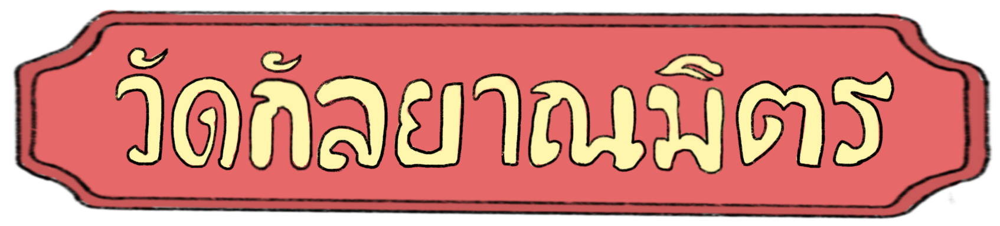
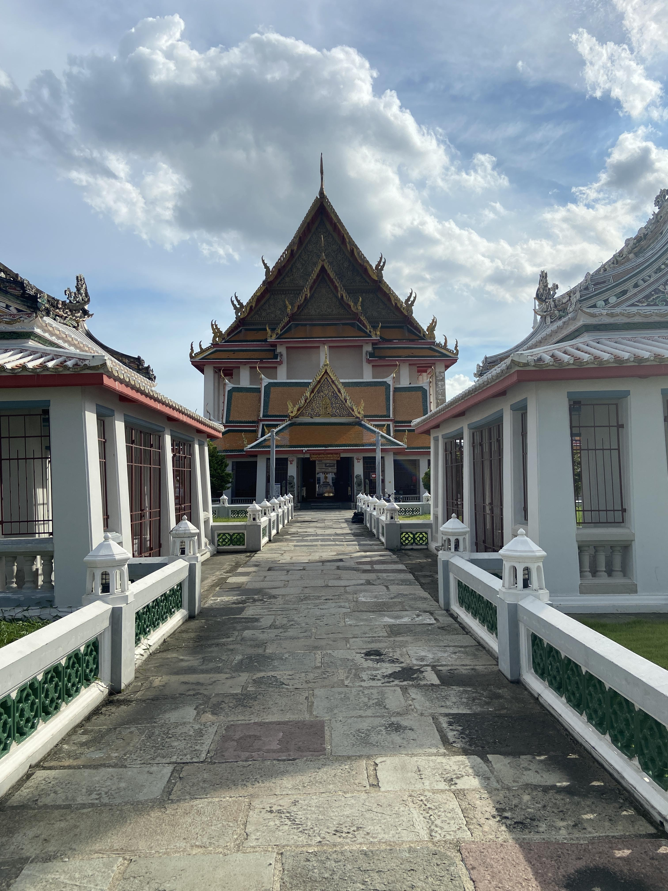
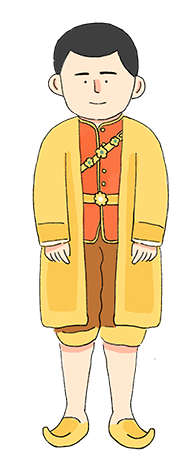

ประวัติศาสตร์ท้องถิ่น

วัดกัลยาณมิตร
วรมหาวิหาร
โบสถ์
ซางตาครูส

วัดประยุรวง
ศาวาส
กุฎีขาว

ศาลเจ้า
เกียนอันเกง


ใช้เป็นพระอารามหลวง ก่อนหน้านี้ เจ้าพระยานิกรบดินทร์ (โต) ได้อุทิศบ้านและซื้อที่ดินข้างเคียงเพิ่มเติม เพื่อสร้างเป็นวัดแล้วถวายให้พระบาทสมเด็จพระนั่งเกล้าเจ้าอยู่หัว (ร.3)
ใช้เป็นพระอารามหลวง ก่อนหน้านี้เจ้าพระยานิกรบดินทร์ (โต) ได้อุทิศบ้านและซื้อที่ดินข้างเคียงเพิ่มเติม เพื่อสร้างเป็นวัดแล้วถวายให้พระบาทสมเด็จพระนั่งเกล้าเจ้าอยู่หัว (ร.3)


รัชกาลที่ 3 พระราชทานนามว่า
เป็นที่ประดิษฐาน พระพุทธไตรรัตนนายก หรือ หลวงพ่อโต เป็นที่เคารพสักการะอย่างมาก โดยเฉพาะในหมู่ชาวจีนและเรียกท่านว่า ซำปอฮุดกง หรือ ซำปอกง
พระวิหารหลวง
รูปแบบสถาปัตยกรรมแบบไทย ก่ออิฐถือปูน หลังคามุงกระเบื้องเคลือบประดับช่อฟ้า ใบระกา หางหงส์
รูปแบบสถาปัตยกรรม
รูปแบบสถาปัตยกรรมแบบไทย ก่ออิฐถือปูน หลังคามุงกระเบื้องเคลือบประดับช่อฟ้า ใบระกา หางหงส์
ประวัติศาสตร์ท้องถิ่น
วัดกัลยาณมิตรวรมหาวิหาร
วัดประยุรวงศาวาส